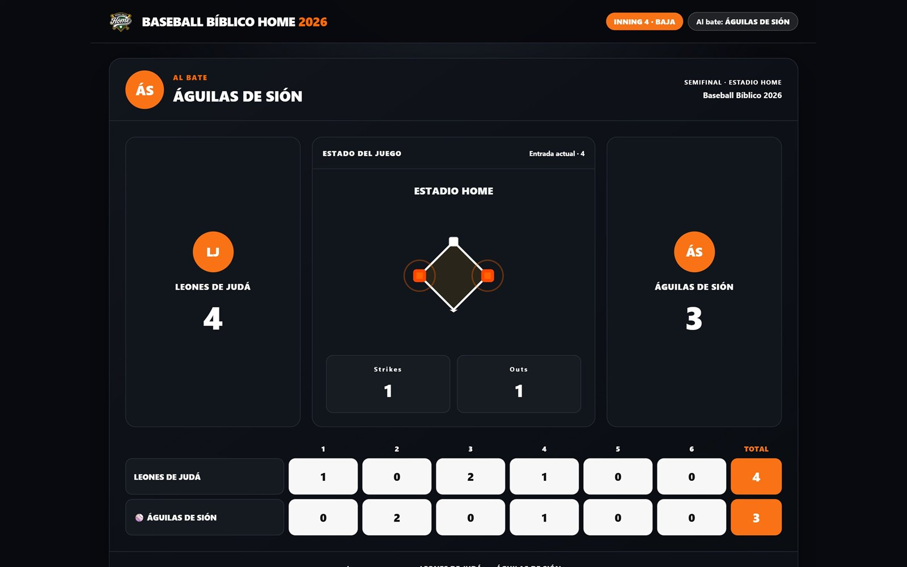

Baseball Scoreboard
Marcador en vivo para un torneo comunitario de Béisbol Bíblico. Reemplacé pizarras y diapositivas actualizadas a mano por una consola donde las acciones frecuentes toman un clic y la pantalla del público se actualiza sola, sin depender de internet.
Rol: Product Design + desarrollo frontend
- 10–15 partidos operados
- 4 tipos de usuario
- Funciona sin conexión